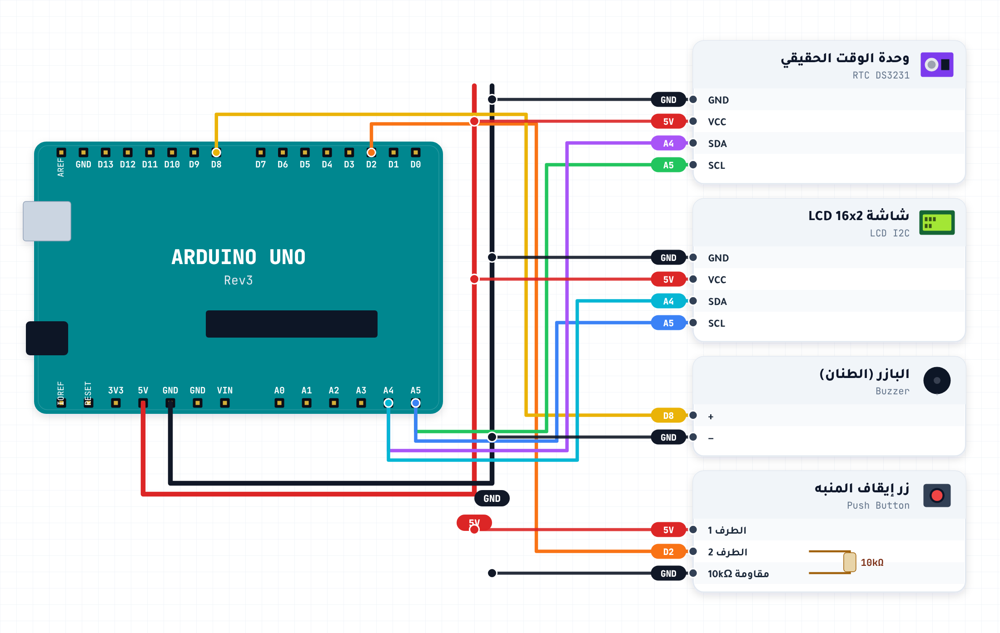

▶فيديو الشرح
ساعة مكتبية تحتفظ بالوقت حتى بعد فصل الكهرباء، مع منبه يتوقف بزر.
1المكونات
ARDUINO UNOboardوحدة الوقت الحقيقيRTC DS3231شاشة LCD 16x2LCD I2Cالبازر (الطنان)Buzzerزر إيقاف المنبهPush Buttonأسلاك توصيلJumper Wiresلوحة تجاربBreadboard
2مخطط التوصيل

اضغط على المخطط لتكبيره · نسخة SVG عالية الدقة
| القطعة | الطرف | يوصل إلى |
|---|---|---|
| وحدة الوقت الحقيقي | GND | GND |
| وحدة الوقت الحقيقي | VCC | 5V |
| وحدة الوقت الحقيقي | SDA | A4 |
| وحدة الوقت الحقيقي | SCL | A5 |
| شاشة LCD 16x2 | GND | GND |
| شاشة LCD 16x2 | VCC | 5V |
| شاشة LCD 16x2 | SDA | A4 |
| شاشة LCD 16x2 | SCL | A5 |
| البازر (الطنان) | + | D8 |
| البازر (الطنان) | − | GND |
| زر إيقاف المنبه | الطرف 1 | 5V |
| زر إيقاف المنبه | الطرف 2 | D2 |
| زر إيقاف المنبه | مقاومة 10kΩ | GND |
| زر إيقاف المنبه | مقاومة 10kΩ | بين «الطرف 2» و «مقاومة 10kΩ» |
3الكود
المكتبات المطلوبة (من Arduino IDE ← Sketch ← Include Library ← Manage Libraries):
- LiquidCrystal I2C — Frank de Brabander
- RTClib — Adafruit
/* المستوى المتوسط — المشروع 8: الساعة الرقمية الذكية والمنبه (RTC + LCD) كتاب: 38 مشروع في شهر — لؤي النصري (@robotlouay) المكتبات: RTClib (Adafruit) + LiquidCrystal I2C التوصيل (الشاشة ووحدة RTC تتشاركان نفس الخطوط): SDA → A4 SCL → A5 VCC → 5V GND → GND Buzzer (+) → Pin 8 ، (−) → GND زر الإيقاف: طرف → 5V ، طرف → Pin 2 + مقاومة 10kΩ من Pin 2 إلى GND أول تشغيل: أزل // من سطر rtc.adjust وارفع الكود مرة، ثم أعدها وارفع من جديد. */ #include <Wire.h> #include <RTClib.h> #include <LiquidCrystal_I2C.h> RTC_DS3231 rtc; // DS1307 أيضاً يعمل: RTC_DS1307 rtc; LiquidCrystal_I2C lcd(0x27, 16, 2); const int BUZZER_PIN = 8; const int STOP_BTN = 2; const int ALARM_HOUR = 7; // موعد المنبه 07:00 const int ALARM_MIN = 0; bool ringing = false; bool doneToday = false; void print2(int v) { if (v < 10) lcd.print('0'); lcd.print(v); } void setup() { pinMode(BUZZER_PIN, OUTPUT); pinMode(STOP_BTN, INPUT); lcd.init(); lcd.backlight(); if (!rtc.begin()) { lcd.print("RTC not found!"); while (true); } // rtc.adjust(DateTime(F(__DATE__), F(__TIME__))); // ضبط الوقت مرة واحدة فقط } void loop() { DateTime now = rtc.now(); // السطر 1: الوقت lcd.setCursor(0, 0); lcd.print("Time "); print2(now.hour()); lcd.print(':'); print2(now.minute()); lcd.print(':'); print2(now.second()); // السطر 2: التاريخ + موعد المنبه lcd.setCursor(0, 1); print2(now.day()); lcd.print('/'); print2(now.month()); lcd.print(' '); lcd.print("AL "); print2(ALARM_HOUR); lcd.print(':'); print2(ALARM_MIN); // تشغيل المنبه if (now.hour() == ALARM_HOUR && now.minute() == ALARM_MIN && !doneToday) { ringing = true; doneToday = true; } if (now.hour() != ALARM_HOUR || now.minute() != ALARM_MIN) doneToday = false; if (ringing) { tone(BUZZER_PIN, (millis() / 250) % 2 ? 2000 : 1500); // نغمة متقطعة if (digitalRead(STOP_BTN) == HIGH) { // زر الإيقاف ringing = false; noTone(BUZZER_PIN); } } delay(100); }
هذا المشروع يعتمد على مكتبات أو لوحات غير متوفرة في mBlock 5، لذلك نستعمل Arduino IDE. انسخ الكود من تبويب Arduino IDE.
4كيف يعمل؟
- وحدة RTC تحفظ الوقت ببطاريتها
- الشاشة ووحدة RTC تتشاركان SDA و SCL
- عند موعد المنبه يرن البازر
- زر الإيقاف يسكته
⚠ قبل توصيل الكهرباء: راجع كل سلك مع الجدول أعلاه، وتأكد من عدم وجود تماس بين 5V و GND. اختر اللوحة والمنفذ الصحيحين من قائمة Tools في Arduino IDE.